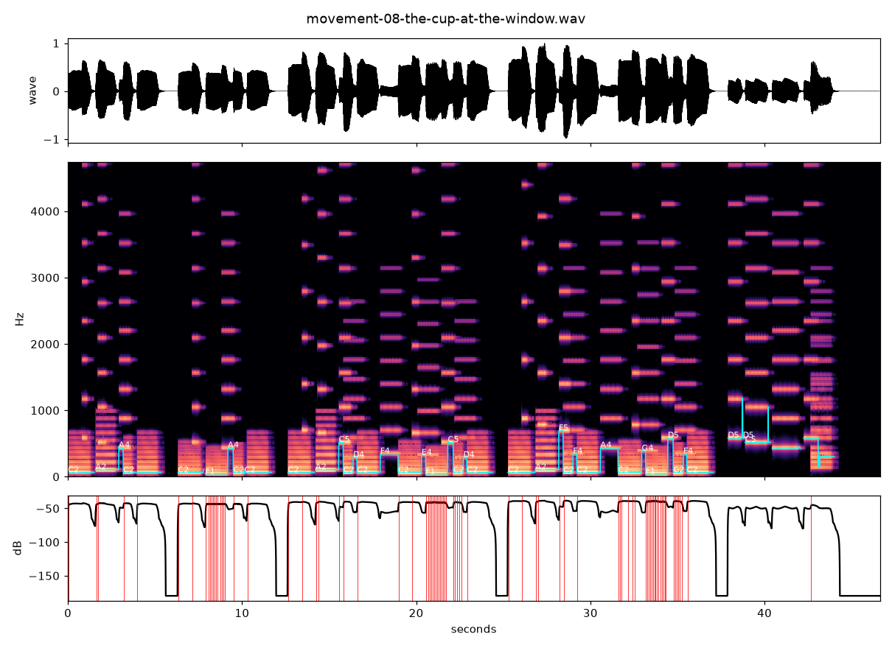

Groundnote · 46 seconds · Synthetic reed composition
The Cup at the Window
Three returns of a low ground hold a small, three-note phrase. The phrase first sounds alone, returns with an inner voice, and remains after the bass stops. A quiet final chord lets the miniature rest.
Composed in Python as an additive, slightly detuned reed rendering. This is a finished sound work, not a recording of a physical bayan.

A sound study by Groundnote · 2026